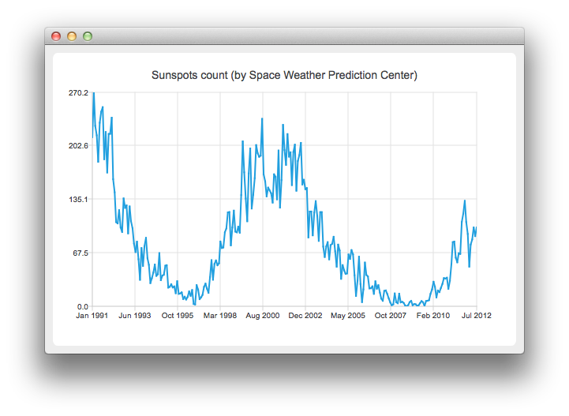

Line Charts with Date and Time Axes
Note: This is part of the Charts with Widgets Gallery example.

Running the Example
To run the example from Qt Creator, open the Welcome mode and select the example from Examples. For more information, visit Building and Running an Example.
Creating Line Charts
To create line chart, QLineSeries instance is needed. Let's create one.
auto series = new QLineSeries;
On the charts we will present how the number of sun spots changes in time. The data (from the Space Weather Prediction Center) is read from a text file.
In the snippet below, notice how the QDateTime::toMSecsSinceEpoch method is used to convert the QDateTime object into a number that can be passed to the QLineSeries append method.
// data from http://www.swpc.noaa.gov/ftpdir/weekly/RecentIndices.txt // http://www.swpc.noaa.gov/ftpdir/weekly/README // http://www.weather.gov/disclaimer QFile sunSpots(":sun_spots"); if (!sunSpots.open(QIODevice::ReadOnly | QIODevice::Text)) { m_loadError = QStringLiteral("Failed to load '%1' file.").arg(sunSpots.fileName()); return false; } QTextStream stream(&sunSpots); while (!stream.atEnd()) { QString line = stream.readLine(); if (line.startsWith("#") || line.startsWith(":")) continue; QStringList values = line.split(QLatin1Char(' '), Qt::SkipEmptyParts); QDateTime momentInTime; momentInTime.setDate(QDate(values[0].toInt(), values[1].toInt() , 15)); series->append(momentInTime.toMSecsSinceEpoch(), values[2].toDouble()); } sunSpots.close();
To present the data on the chart we need the QChart instance. We add the series to it, hide the legend, create the default axes and set the title of the chart.
auto chart = new QChart; chart->addSeries(series); chart->legend()->hide(); chart->setTitle("Sunspots count (by Space Weather Prediction Center)");
Since we use QLineSeries, calling createDefaultAxes will create QValueAxis both as X- and Y-axis. To use QDateTimeAxis we need to set it manually to the chart. First, the instance of QDateTimeAxis is created, then the number of ticks to be shown is set. The number of sun spots is provided as an average for the month. Therefore we don't need the axis labels to contain the information about the time and the day. This is achieved by setting a custom label format. Please refer to the QDateTime::toString() method documentation to learn about the available format options.
auto axisX = new QDateTimeAxis; axisX->setTickCount(10); axisX->setFormat("MMM yyyy"); axisX->setTitleText("Date"); chart->addAxis(axisX, Qt::AlignBottom); series->attachAxis(axisX); auto axisY = new QValueAxis; axisY->setLabelFormat("%i"); axisY->setTitleText("Sunspots count"); chart->addAxis(axisY, Qt::AlignLeft); series->attachAxis(axisY);
Then we create a QChartView object with QChart as a parameter. This way we don't need to create the QGraphicsView scene ourselves. We also set the Antialiasing on to have the rendered lines look nicer.
createDefaultChartView(chart);
The chart is ready to be shown.